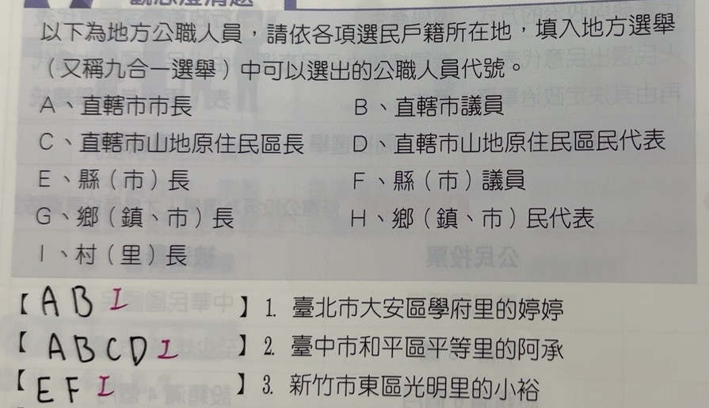

完整原題
作答所需文章／材料
以下為地方公職人員，請依各項選民戶籍所在地，填入地方選舉（又稱九合一選舉）中可以選出的公職人員代號。| 代號 | 名稱 |
|---|---|
| A | 直轄市市長 |
| B | 直轄市議員 |
| C | 直轄市山地原住民區長 |
| D | 直轄市山地原住民區民代表 |
| E | 縣（市）長 |
| F | 縣（市）議員 |
| G | 鄉（鎮、市）長 |
| H | 鄉（鎮、市）民代表 |
| I | 村（里）長 |
公民第1題｜臺北市大安區學府里的婷婷可選的公職
公民第2題｜臺中市和平區平等里的阿承可選的公職
公民第3題｜新竹市東區光明里的小裕可選的公職
先想一想，再查看答案、解說與原圖
公民第1題｜臺北市大安區學府里的婷婷可選的公職
分享原卷｜第1題 · 首次出題日期 2026-11-03 · 原AI對話 ↗
逐項解析
| 選項與原句 | 判讀 | 句意與判斷理由 |
|---|---|---|
| (A) 直轄市市長 | 應選 | 臺北市為直轄市，可以選市長。 |
| (B) 直轄市議員 | 應選 | 直轄市議員由市民選出。 |
| (C) 直轄市山地原住民區長 | 不選 | 本題戶籍地不是直轄市山地原住民區，不選其區長。 |
| (D) 直轄市山地原住民區民代表 | 不選 | 本題不適用山地原住民區民代表。 |
| (E) 縣（市）長 | 不選 | 本題是直轄市，不能另加縣（市）長。 |
| (F) 縣（市）議員 | 不選 | 本題是直轄市，不能另加縣（市）議員。 |
| (G) 鄉（鎮、市）長 | 不選 | 本題沒有另外民選的鄉、鎮或縣轄市長，不重複套用此類。 |
| (H) 鄉（鎮、市）民代表 | 不選 | 本題沒有另選鄉鎮市民代表，不與山地原住民區民代表混用。 |
| (I) 村（里）長 | 應選 | 戶籍在學府里，里長仍由里民選出。 |
詳細說明與解題步驟
臺北市為直轄市，選市長A、市議員B；大安區是一般行政區，區長由市長依法任用，不加上民選區長。戶籍在學府里，仍可選里長I，所以答案為A、B、I，共3類地方公職。
一般區長不是民選，並不代表里長也不是民選；本題原作答漏掉里長。公投不在這份地方公職代號表中，不另算進答案。
婷婷的戶籍層級
↓ 由上往下看戶籍層級
↓ 由上往下看戶籍層級
① 戶籍逐層看：直轄市、一般區、里
婷婷在臺北市大安區學府里。臺北市是直轄市，大安區是一般區；先確認制度，再判斷能選的地方公職。
直轄市層級的公職
↓ 依本題表的代號列出
② 直轄市層級：選A、B
直轄市層級可選市長A、市議員B。不能再重複加入縣市長E、縣市議員F；它們是不同類別。
一般區與里長分開判斷
↓ 區長不是民選，不影響里長民選
③ 一般區長不選，里長仍要選
大安區長由市長依法任用，不是本題另選的公職；學府里的里長I仍由里民選出，不能一起漏掉。
④ 臺北市一般區：別漏里長
答案 A、B、I：共3類地方公職
- A市長＋B市議員＋I里長。
- 大安區是一般區，不加區長或區民代表。
- 本題算公職類別，不把公投另加進來。
核對註記：已實看真正上傳原卷及裁切成品，核對完整題幹、全部選項、必要表文與原卷訂正，並於2026-11-04核對官方法規。未確認教材對應冊次、章節，歸綜合。日期取原問首次訊息的台灣日期，非實際考試日期。
原圖（僅本題）

公民第2題｜臺中市和平區平等里的阿承可選的公職
分享原卷｜第2題 · 首次出題日期 2026-11-03 · 原AI對話 ↗
逐項解析
| 選項與原句 | 判讀 | 句意與判斷理由 |
|---|---|---|
| (A) 直轄市市長 | 應選 | 臺中市為直轄市，可以選市長。 |
| (B) 直轄市議員 | 應選 | 可以選臺中市議員。 |
| (C) 直轄市山地原住民區長 | 應選 | 和平區是山地原住民區，區長由區民選出。 |
| (D) 直轄市山地原住民區民代表 | 應選 | 山地原住民區設區民代表會，可以選區民代表。 |
| (E) 縣（市）長 | 不選 | 本題是直轄市，不能另加縣（市）長。 |
| (F) 縣（市）議員 | 不選 | 本題是直轄市，不能另加縣（市）議員。 |
| (G) 鄉（鎮、市）長 | 不選 | 本題沒有另外民選的鄉、鎮或縣轄市長，不重複套用此類。 |
| (H) 鄉（鎮、市）民代表 | 不選 | 本題沒有另選鄉鎮市民代表，不與山地原住民區民代表混用。 |
| (I) 村（里）長 | 應選 | 平等里仍選里長，不能漏掉。 |
詳細說明與解題步驟
臺中市為直轄市，先選市長A、市議員B。和平區是直轄市山地原住民區，和一般區不同，還選區長C、區民代表D。戶籍在平等里，也能選里長I，答案是A、B、C、D、I，共5類地方公職。
判斷重點是戶籍所在行政區的制度，不是只看選民是否有原住民身分；也不能把山地原住民區的區長和鄉鎮市長重複計算。
阿承的戶籍層級
↓ 由上往下判斷制度
↓ 由上往下判斷制度
① 和平區是山地原住民區
阿承在臺中市和平區平等里。和平區具有自治地位，與一般行政區的區長任用制度不同。
市與自治區的公職
↓ 兩層制度分別適用
② 市與自治區：A、B、C、D
先有臺中市長A、市議員B；和平區還能選區長C、區民代表D。依戶籍制度判斷，不是只看個人有無原住民身分。
最後補上里長
↓ 把里長加入完整清單
③ 平等里長I也要選
別漏平等里的里長I，總共A、B、C、D、I五類。C已是本地區長，不能再把鄉鎮市長G重複加進來。
④ 和平區：自治區公職與里長都要列
答案 A、B、C、D、I：共5類
- 臺中市層級A、B。
- 和平自治區層級C、D。
- 平等里長I，不重複加G、H。
核對註記：已實看真正上傳原卷及裁切成品，核對完整題幹、全部選項、必要表文與原卷訂正，並於2026-11-04核對官方法規。未確認教材對應冊次、章節，歸綜合。日期取原問首次訊息的台灣日期，非實際考試日期。
原圖（僅本題）
公民第3題｜新竹市東區光明里的小裕可選的公職
分享原卷｜第3題 · 首次出題日期 2026-11-03 · 原AI對話 ↗
逐項解析
| 選項與原句 | 判讀 | 句意與判斷理由 |
|---|---|---|
| (A) 直轄市市長 | 不選 | 不是本題應適用的直轄市市長類別。 |
| (B) 直轄市議員 | 不選 | 不是本題應適用的直轄市議員類別。 |
| (C) 直轄市山地原住民區長 | 不選 | 本題戶籍地不是直轄市山地原住民區，不選其區長。 |
| (D) 直轄市山地原住民區民代表 | 不選 | 本題不適用山地原住民區民代表。 |
| (E) 縣（市）長 | 應選 | 新竹市與縣同層級，選市長對應E。 |
| (F) 縣（市）議員 | 應選 | 新竹市議員對應縣（市）議員F。 |
| (G) 鄉（鎮、市）長 | 不選 | 本題沒有另外民選的鄉、鎮或縣轄市長，不重複套用此類。 |
| (H) 鄉（鎮、市）民代表 | 不選 | 本題沒有另選鄉鎮市民代表，不與山地原住民區民代表混用。 |
| (I) 村（里）長 | 應選 | 光明里可選里長。 |
詳細說明與解題步驟
新竹市是與縣同層級的市，不是直轄市，也不是新竹縣下的縣轄市。市長、市議員應選E、F，不是直轄市的A、B。東區是一般行政區，區長依法任用；光明里仍選里長I，所以答案為E、F、I，共3類地方公職。
不要因地名都是「市」，就把新竹市、臺北市、竹北市混為同一層級。先確認市的種類，再檢查區是否另有自治選舉，最後別漏村里長。
小裕的戶籍層級
↓ 由上往下判斷制度
↓ 由上往下判斷制度
① 新竹市與縣同層級
小裕在新竹市東區光明里。新竹市是與縣同層級的市，不是直轄市，也不是新竹縣下的縣轄市。
新竹市的公職代號
↓ 依原表的公職類別對應
② 市層級：對應E、F
新竹市長對應縣（市）長E，市議員對應縣（市）議員F。A、B是直轄市類別，不能因都有市字就選錯。
一般區與里分開看
↓ 一般區長非民選，不等於里長非民選
③ 東區長不另選，里長仍民選
東區是一般區，區長依法任用；光明里仍可選里長I。因此E、F之外補I，不能把一般區長也算入民選。
④ 新竹市：辨清市的種類，別漏里長
答案 E、F、I：共3類地方公職
- 新竹市不是直轄市，也不是縣轄市。
- E市長＋F市議員＋I里長。
- 一般區長依法任用，里長仍由里民選出。
核對註記：已實看真正上傳原卷及裁切成品，核對完整題幹、全部選項、必要表文與原卷訂正，並於2026-11-04核對官方法規。未確認教材對應冊次、章節，歸綜合。日期取原問首次訊息的台灣日期，非實際考試日期。